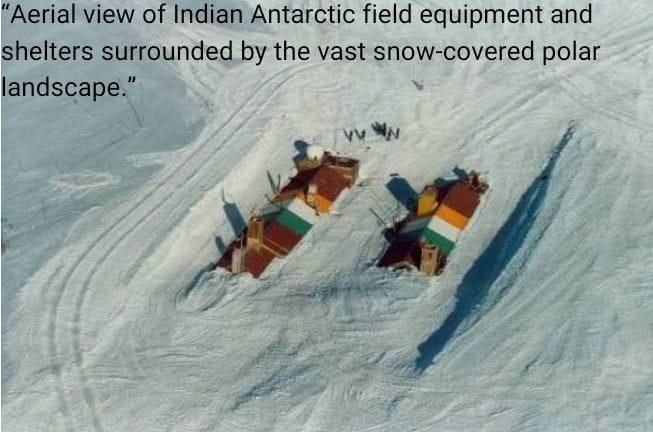
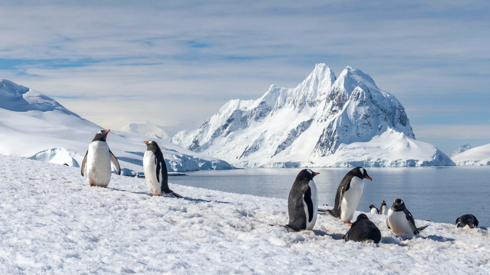
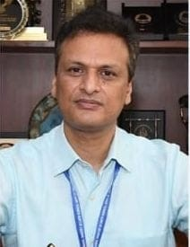

Bharati Digital Twin
Digital twin representation of Bharati Research Station showing the station environment and digital visualization concept.

Loading latest Antarctic news...

Antarctica is the southernmost continent on Earth and is surrounded by the Southern Ocean. It is one of the coldest, driest and windiest regions on the planet, with most of its surface covered by a vast ice sheet.
The continent plays an important role in regulating the Earth's climate and ocean systems. Changes in Antarctic ice, atmosphere and oceans are important indicators of global environmental change.
Antarctica is also an important region for scientific research. Researchers study ice, atmosphere, oceans, wildlife and environmental conditions to understand climate processes and the history of our planet.
India has been participating in Antarctic scientific research through its national polar research programme, supporting observations, field studies, logistics and scientific investigations.
Digital twin visualization of Indian Antarctic research stations.
Digital twin representation of Bharati Research Station showing the station environment and digital visualization concept.
Digital twin representation of Maitri Research Station for Antarctic monitoring and research visualization.
Information about India's Antarctic research stations.

Dakshin Gangotri was India's first scientific research station in Antarctica and marked an important milestone in the Indian Antarctic Programme.
Established during India's early Antarctic expeditions, the station supported scientific observations and research activities in the region. Due to the movement and accumulation of ice, the station was eventually decommissioned.
Country: India
Region: Antarctica
Status: Decommissioned
Significance: India's first Antarctic research station
Bharati is an Indian Antarctic research station supporting scientific observations and research activities in the polar environment.
The station provides facilities for researchers working on Antarctic science, environmental studies and field-based observations.
Bharati is an important part of India's continuing Antarctic research activities.

Maitri is India's second permanent research station in Antarctica and supports scientific research in the polar region.
The station provides facilities for scientific observations, environmental monitoring and Antarctic field studies.

Maitri 2 represents the next generation of Antarctic research infrastructure planned to support future scientific activities.
The facility is intended to provide modern infrastructure for researchers and Antarctic scientific operations.
Scientific activities, researchers and development supporting Antarctic exploration.

Scientists working in Antarctica conduct research on ice, atmosphere, oceans, climate, wildlife, geology, biology and other polar environmental systems.
Antarctic researchers use field observations, laboratory studies, remote sensing and scientific instruments to understand the polar environment.
Research and development activities support scientific observation, technological innovation, environmental monitoring and field operations in Antarctica.
Development of scientific instruments, monitoring systems, communication technologies and logistics solutions can help researchers operate effectively in the challenging Antarctic environment.
Polar research also contributes to understanding climate processes, ocean systems and long-term environmental changes.
Transportation and logistical support for Antarctic expeditions.

Expedition and ice-class vessels support transportation, logistics, scientific equipment movement and research operations in Antarctic waters.

Helicopter operations can support personnel movement, logistics, field activities and transportation during Antarctic expeditions.

Aircraft and transportation systems provide important logistical support for Antarctic research activities and expedition operations.
Information and contact details related to polar and Antarctic research.
National Centre for Polar and Ocean Research
Ministry of Earth Sciences, Government of India
Phone: +91-832-2520876 / 2525511
Email: director@ncpor.res.in
General Email: info@ncpor.res.in
Antarctica Science Contact: antarctic-sci@ncpor.res.in
Antarctica Science Phone: +91-832-2525531
National Centre for Polar and Ocean Research
Ministry of Earth Sciences, Government of India
Headland Sada, Vasco-da-Gama, Goa – 403 804, India
Antarctica Operations & Logistics: +91-832-2525568
Antarctica Science: +91-832-2525531